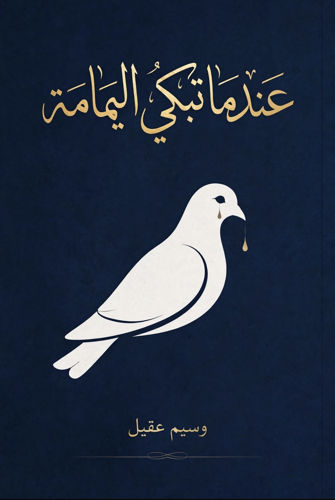

بدأتُ أفهم. العنكبوت لا يصطاد فريسته فوراً. هو ينسج. يترك خيطاً هنا، وخيطاً هناك.
شبكتي كانت مختلفة. لم تكن من حرير. كانت من مواعيد، من رسائل "كيف حالك؟"، من ضحكات مشتركة، من ذكريات صغيرة كنت أظن أنني أجمعها لنفسي.
كنت أظن أنني أنا من ينسج. لكنني كنت أنا من يقع.
كل مرة كنت أقترب فيها لأقطع خيطاً، أجد خيطاً آخر قد التف حول قدمي. بلطف. بدون ألم. لدرجة أنني كنت أبتسم وأنا أتعثر.
العنكبوت لم يكن يتحرك. كان ينتظر في الوسط، صامتاً، صابراً.
نظرت حولي. لم أعد أرى الجدران. كنت أرى خيوطاً. خيوطاً تلمع تحت ضوء خافت.
وهنا كان السؤال الحقيقي: هل أقطع الشبكة وأسقط، أم أبقى معلقاً فيها، في أمانها المخيف؟
في الليلة الثامنة، لم أجدها.
نظرت إلى الركن الأيمن كعادتي.. كان أبيضاً. أبيض بشكل موحش. كأن أحداً محا صديقتي بممحاة.
ابتسمت ببلاهة. قلت لنفسي ستعود. العنكبوت لا يهجر بيته.
لكنها لم تعد في التاسعة. ولا في العاشرة.
بدأت أشعر بفراغ غريب. كأن الغرفة اتسعت فجأة. كأن السقف ارتفع.
صرت أراقب الحشرات الصغيرة التي كانت تهرب منها. صارت تمر بجانب ركنها بلا خوف.
في الليلة الحادية عشرة، وضعت كرسياً وصعدت. اقتربت من شبكتها. كانت لا تزال هناك. خيوطها اللامرئية لا تزال معلقة في الهواء، لكنها مترهلة.. بلا روح.
مددت إصبعي ولمستها.
اهتزت الشبكة كلها.. وحدها.
فهمت حينها.
لقد ماتت.. أو هجرتني. وتركتني وحيداً مرة أخرى، أرشف دخاني وأحدق في بياضٍ لا ينتهي.
عدت إلى سريري، وأشعلت سيجارة أخرى. نظرت إلى السقف، وبحثت عن بقعة سوداء جديدة.. لم أجد.
يبدو أنني سأعتاد الوحدة مجدداً.
أو ربما.. سأصنع أنا شبكتي هذه المرة.
وسيم عقيل